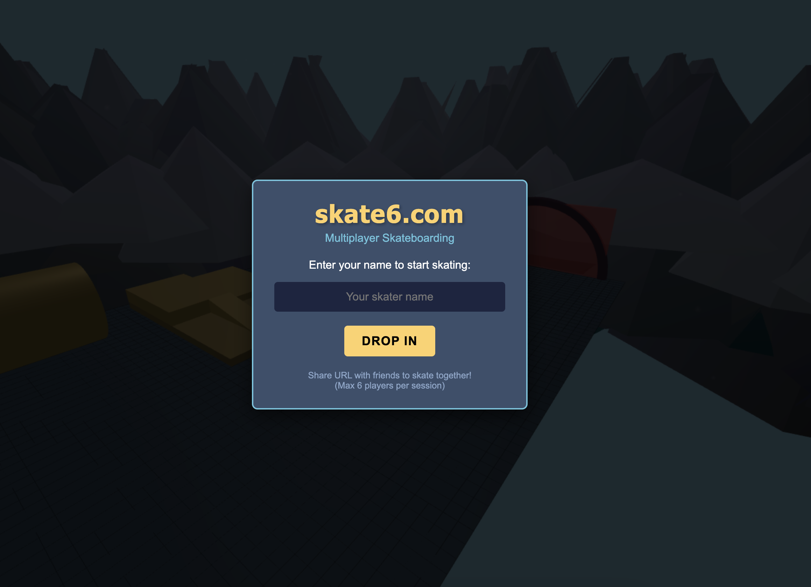

First month completed, 2 products, 0 launches
This is the first month completed. And things are not going as well as I hoped. The first month has come to an end and despite building 2 functional products, I didn't really launch any. It's time to assess what went wrong and recalibrate my approach for the next month.
What I planned to the first month
I always intended to take it somewhat easy in the first month. Not in terms of effort or time spent, but in terms of expectations.
I wanted to take the first months as warm up. I have 10 years of experience working as a software engineer, but it is very different to be part of a big team in a big company and to be on your own building and launching a startup.
I wanted to go through the whole process from idea to launch, to get a better understanding of the whole process.
However I feel the results are lower than my already pretty low expectations.
Sheetsense.io
Because I treated this as a warm up, I decided to not spend any time on finding a suitable idea. I saw a post on X, where someone was asking for a tool that combined a spreadsheet with a scraper.
There were quite a few people interested in this, so I decided to build it. It took me two weeks to build the whole thing, including stripe integration, dashboard, scraper and google sheet integration.
It worked reasonably well. I posted a link to it on X, in the original thread where I found the idea. And big surprise, there was close to no interest in it. Marketing still escapes me.
Perhaps more importantly, I realised that I really was not interested in the idea. I made a point to still launch it on product hunt, to go through the whole process.
But eventually I really lost interest in it and came to the conclusion that even if someone would pay for it, I just wouldn't want to work on it any further.
Skate6.com
As I was pondering what to do for the remaining 2 weeks of the month (I did want to keep to my schedule at least a little bit), Peter Levels launched his vibe coded flight simulator and got great results.
Inspired by that, I decided to have a go at building a skateboarding simulator. I spent hours playing Tony Hawks Pro as a teen, so I thought it would be a fun project.
I "vibe coded" the first version of this in one week and it was a lot of fun and a lot harder than I thought. I think the game exceeded most of the other games I was seeing on x in terms of looks, but was pretty poor in terms of gameplay.
Shortly thereafter Peter Levels announced he was launching a competition for indie vibe coded games. I have submitted my game now, but I really didn't manage to improve the gameplay much.
I think choosing a skateboard simulator, was as poor a choice as it could get. Unlike a flight simulator, a skateboard simulator is all about collision detection and physics and vibe coding or not, it gets really complicated really quickly.
I could probably improve this game if I spent a lot of time on it, but it doesn't really fit my plans of launching a startup every month.
Project is now live and I will treat it as a longer term side project, just because I love to work on it.
Did something go well?
Ok, so I did not go through the whole process of building and launching a product, twice. So the main goal was pretty much a failure. But did anything go well?
The thing I am most proud of is that I built a framework or template for creating a saas product.
Out of the 2 products I have built, I created a template repository that provides google oauth, stripe integration, a database, and a dashboard.
It also provides a ton of automation to do the time-consuming stuff, like ssl certificates, deployment and many other things that were time-consuming.
I made a test with this tool, and I was able to create a new product and deploy in staging and production in about 2 hours.
This is going to come in very handy for the next months.
What did I learn?
Firstly I learned that no matter what, I love this. It was so much fun and so motivating to work on my own ideas, as poor as they were.
I also learned that I really need to find ideas that I am interested in. I think I would have enjoyed sheetsense more if I was more interested in the idea.
Among others, I was inspired to start this challenge by reading the Jon Yongfook blog post about his 12 startups in 12 months. One of the criteria he used to select his ideas was to ask himself if he would be the right person to contribute to a particular idea. I think what he meant was if he had something unique to contribute to the idea.
I was not the right person to contribute to sheetsense. I was much more of a fit to skate6, but that had other problems. This is something I will keep in mind for the future.